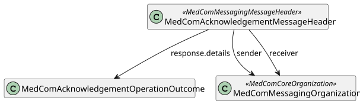
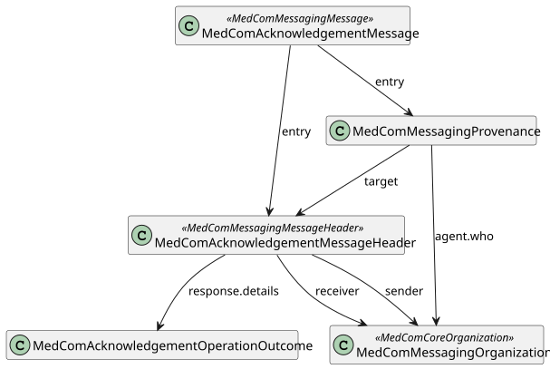

Links: Table of Contents | QA Report | Accessibility statement (Tilgængelighedserklæring)
http://medcomfhir.dk/ig/terminology/CodeSystem/medcom-acknowledgement-error-codes
http://medcomfhir.dk/ig/terminology/CodeSystem/medcom-messaging-activityCodes
http://medcomfhir.dk/ig/terminology/CodeSystem/medcom-messaging-destinationUse
http://medcomfhir.dk/ig/terminology/CodeSystem/medcom-messaging-eventCodes
This fragment is not visible to the reader
This publication includes IP covered under the following statements.
| Type | Reference | Content |
|---|---|---|
| web | sor2.sum.dsdn.dk | https://sor2.sum.dsdn.dk/#id=953741000016009 |
| web | sor2.sum.dsdn.dk | https://sor2.sum.dsdn.dk/#id=265161000016000 |
| web | www.medcom.dk |
|
| web | www.medcom.dk |
IG © 2021+ MedCom
. Package medcom.fhir.dk.acknowledgement#2.0.3 based on FHIR 4.0.1
. Generated 2026-02-05
Links: Table of Contents | QA Report | Accessibility statement (Tilgængelighedserklæring) |
| web | www.was.digst.dk | Links: Table of Contents | QA Report | Accessibility statement (Tilgængelighedserklæring) |
| web | medcomfhir.dk | The CodeSystem MedComAcknowledgementIssueDetails and ValueSet MedComAcknowledgementIssueDetailValues used in the element OperationOutCome.issue.details.coding are used to describe the issue of receiving a message more detailed. MedCom wants input from IT-vendors on which issue codes provide value in IT-systems. Across sectors there must be an agreed list of codes. For relevant input regarding the issue codes, please contact MedCom . |
| web | medcomfhir.dk | The CodeSystem MedComAcknowledgementIssueDetails and ValueSet MedComAcknowledgementIssueDetailValues used in the element OperationOutCome.issue.details.coding are used to describe the issue of receiving a message more detailed. MedCom wants input from IT-vendors on which issue codes provide value in IT-systems. Across sectors there must be an agreed list of codes. For relevant input regarding the issue codes, please contact MedCom . |
| web | medcomfhir.dk | The CodeSystem MedComAcknowledgementIssueDetails and ValueSet MedComAcknowledgementIssueDetailValues used in the element OperationOutCome.issue.details.coding are used to describe the issue of receiving a message more detailed. MedCom wants input from IT-vendors on which issue codes provide value in IT-systems. Across sectors there must be an agreed list of codes. For relevant input regarding the issue codes, please contact MedCom . |
| web | en.wikipedia.org | Both Bundle.link and Bundle.entry.link are defined to support providing additional context when Bundles are used (e.g. HATEOAS ). |
| web | medcomfhir.dk | A MedCom Acknowledgement message (Danish: Kvittering) corresponds to a receipt of a delivered message. Every time a system receives a MedCom FHIR message, e.g. a HospitalNotification or a CareCommunication , it shall be acknowledged with a MedCom Acknowledgement message, stating if the transfer was successful and the message validated correctly or not. In other word, does a MedCom Acknowledgement message hold information about how delivery of a message went. MedCom FHIR messaging complies with reliable messaging and associated governance , which describes the value and needs of acknowledge all messages. |
| web | medcomfhir.dk | A MedCom Acknowledgement message (Danish: Kvittering) corresponds to a receipt of a delivered message. Every time a system receives a MedCom FHIR message, e.g. a HospitalNotification or a CareCommunication , it shall be acknowledged with a MedCom Acknowledgement message, stating if the transfer was successful and the message validated correctly or not. In other word, does a MedCom Acknowledgement message hold information about how delivery of a message went. MedCom FHIR messaging complies with reliable messaging and associated governance , which describes the value and needs of acknowledge all messages. |
| web | medcomdk.github.io | A MedCom Acknowledgement message (Danish: Kvittering) corresponds to a receipt of a delivered message. Every time a system receives a MedCom FHIR message, e.g. a HospitalNotification or a CareCommunication , it shall be acknowledged with a MedCom Acknowledgement message, stating if the transfer was successful and the message validated correctly or not. In other word, does a MedCom Acknowledgement message hold information about how delivery of a message went. MedCom FHIR messaging complies with reliable messaging and associated governance , which describes the value and needs of acknowledge all messages. |
| web | medcomfhir.dk | A MedComAcknowledgementMessage is inherited from MedComMessagingMessage , and constrains the profile since the MessageHeader shall be of the type MedComAcknowledgementMessageHeader. |
| web | medcomfhir.dk | MedComAcknowledgementMessageHeader is inherited from MedComMessagingMessageHeader , and constrains the profile as carbon-copy is not allowed and it requires a respones code, which states if the delivery of the message went well or not. |
| web | medcomfhir.dk | MedComAcknowledgementOperationOutcome shall be included in the bundle when the MessageHeader.response.code is different from 'ok'. Further, an OperationOutcome resource may be included when the MessageHeader.response.code is 'ok', e.g. in cases where the received message is valid, but it is a dublet. OperationOutcome contains a description of the error and the severity of the error. |
| web | medcomdk.github.io | All profiles shall have a global unique id by using an UUID. Read more about the use of ids here . |
| web | medcomfhir.dk | More examples of a Acknowledgement message can be found here . For examples of a profile, take a look under the tab 'Examples' on the site for the given profile. |
| web | hl7.dk | This IG has a dependency to the MedCom Core IG , MedCom Messaging IG and DK-core v. 2.0.0 , where the latter is defined by HL7 Denmark . This is currently reflected in the profiles MedComAcknowledgementMessage, and MedComAcknowledgementMessageHeader which both inherits from profiles defined in MedCom Messaging IG. |
| web | hl7.dk | This IG has a dependency to the MedCom Core IG , MedCom Messaging IG and DK-core v. 2.0.0 , where the latter is defined by HL7 Denmark . This is currently reflected in the profiles MedComAcknowledgementMessage, and MedComAcknowledgementMessageHeader which both inherits from profiles defined in MedCom Messaging IG. |
| web | medcomdk.github.io | On the introduction page for Acknowledgement an introduction and use cases can be found. |
| web | github.com | MedComs FHIR profiles and extension are managed in GitHub under MedCom: Source code |
| web | medcomdk.github.io | A description of governance concerning change management and versioning of MedComs FHIR artefacts, can be found on the link. |
| web | www.medcom.dk | MedCom is responsible for this IG. |
|
AcknowledgementMessageHeader.svg  |
|
MedComAcknowledgementMessage.svg  |
tree-filter.png 
|